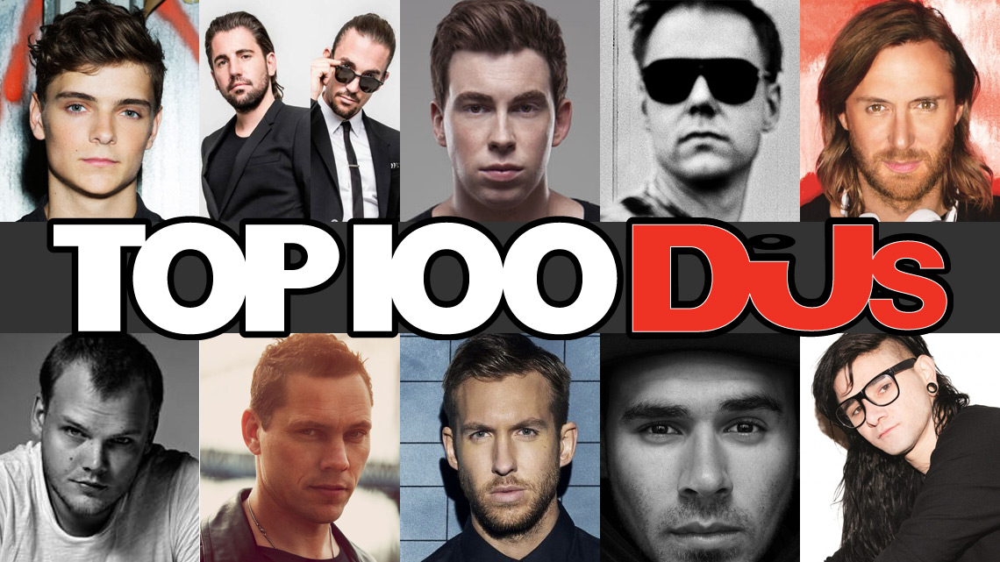

WHO'S NEXT NO.1??
Voting for the 2016 edition of DJ Magazine’s Top 100 DJs Poll, the world’s biggest music ballot, is now open, and closes at 11.59pm BST on Wednesday 14th September.
The 2016 winner will be crowned at the Top 100 DJs Poll Awards on Wednesday 19th October at Amsterdam’s Heineken Music Hall; the show is the opening night of AMF, which is held during the Amsterdam Dance Event (ADE). The event will feature DJ sets from the world’s No.1 DJ, and some of the biggest names in global dance music
01.Matin Garrix
It’s incredible to think that Martin Garrix isn’t legally allowed to drink alcohol at the EDM festivals he's been a fixture at the past few years. Garrix, who’s aged 19, wouldn’t even have been old enough to get into most nightclubs when he charted at No.40 on the DJ Mag Top 100 for the first time in 2013. But his relative youth, compared to the rest of the DJs who have made this year’s top 10, has not held him back — if anything it’s probably aided his remarkable rise.
Garrix, who was born Martijn Garritsen in 1996 in Amstelveen, just outside of Amsterdam, is, in many ways, the embodiment of the generation that have grown up with EDM. In 2004, Garritsen had a musical revelation after witnessing fellow Dutchman Tiësto DJ during the opening ceremony of the Olympic Games held in Athens.
02. Dimitri Vegas & Like Mike
Dimitri Vegas & Like Mike’s ascent to the top of the Top 100 DJs poll will be forever intertwined with their role at their country’s Tomorrowland Festival.
The iconic Belgian party has itself grown over the past decade to become one of the world’s most popular events, though it was in 2010 when brothers Dimitri and Michael Thivaios were first selected to pen the festival’s anthem. World domination slowly but surely followed, for both the brothers and the festival.
“Tomorrowland is for sure the biggest pillar of our success,” says Dimitri, speaking to DJ Mag just after returning from the festival’s North American cousin TomorrowWorld, where they’d played to jubilant vibes on Saturday prior to it notoriously being washed out by rainy weather.
03.Hardwell
He may have been dethroned after two years at the top of the poll but Hardwell’s bigger than ever. Robbert van de Corput’s 2015 was a very good year even by his bombastic standards. His debut album ‘United We Are’ was released in January, while a residency at Ibiza’s swish Ushuaia, Hardwell’s Carnival, saw the EDM star slay all contenders for sheer chutzpah.
But it was the filming of a biopic documentary movie following his hectic life on the road, I Am Hardwell – Living The Dream, premiered at Amsterdam Dance Event, that really took him outside his comfort zone.
“It’s kind of odd to see yourself on screen, especially in a cinema environment,” Robbert admits. “I’m not an actor so for me this is really unusual, but it’s always amazing to see how much I’ve evolved, not just as an artist, but also as a person.
“When we first started filming the very first documentary I was conscious the camera was filming me but these days when the camera is rolling I’m not really noticing it at all,” he continues. “So it’s strange when I see myself on the screen talking or DJing or travelling or whatever, in a kind of natural state, it’s really giving a glimpse into me and my life and this whole journey.”
No stranger to collaborations, Hardwell hooked up with several artists this year, including rising artist Wiwek, whose brand of EDM ‘jungle terror’ has been getting him a lot of attention of late. Robbert loves working with others, suggesting that when it’s right, magic can happen.
04.Armin Van Buuren
“I think it’s a really odd phenomenon,” Armin van Buuren says matter-of-factly down the phone line. We’re talking with the legendary trance producer about ghost production — an issue that Armin feels strongly about.
“For example, everyone remembers the whole Milli Vanilli scandal, how cheated people felt. I think it's wrong if someone puts a name on a track they had nothing to do with, that they weren't even in the studio for. I've never used a ghost producer, I can firmly say that,” he states.
It’ll come as no surprise to any Armin fan that the industry champ crafts his own tracks. He’s been releasing music for nigh-on two decades through his imprint Armada and radio show/label, A State Of Trance. It’s not just with his tunes that Armin has garnered fans worldwide — he’s adored for his spectacular stage shows too. His 2014 Armin Only tour took 35 people on the road, including a theatre director, trapeze artists, dancers, singers and musicians, with this year’s Intense tour going even bigger.
“It was probably the worst decision for me to do this tour financially,” he says, ruefully. “But the best choice for me personally. It was the best time of my life!”
“It's so sad when it’s over because I won't get to see my Intense family anymore, we’re a really close team,” he finishes, passionately.
Armin’s Intense tour crossed the globe from corner to corner, with the DJ visiting the Ukraine, India, Russia, the USA, South Africa and Australia — phew! As if that wasn’t enough to keep him busy, Armin also held down his usual residency in Ibiza this year, spinning every Thursday to his loyal legion of White Isle trancers. “Ibiza is always fun, this year was really excellent. It feels like a home-coming when I play there,” he says of lush Ibiza venue Ushuaia, which he moved to following many seasons at Privilege.
05.Avicii
2015 has been a year of metamorphosis for Avicii. Still riding high from 2013's stratospherically successful LP 'True', which included global country-cum-EDM anthem 'Wake Me Up', the producer (known to his mates as simply Tim Bergling) has kept quieter in the last twelve months, slowing down to focus on his next album.
The hotly anticipated 'Stories' arrived at the start of October in a blaze of pop/dance glory, with DJ Mag awarding it an impressive 8/10. It's a masterful follow-up for the Swede, whose debut 'True' dropped at No.5 on the Billboard charts whilst 'Wake Me Up' hit the No.1 spot in 63 countries.
'Stories' sees Avicii reveal his darker side, with some of its lyrical content alluding to his ongoing battles with global fame and a demanding schedule. There’s also a bevy of impressive collabs bulking up the tracklist with Alex Ebert, Matisyahu, Wyclef Jean, Zak Abel and Zac Brown, plus country singer Gavin McGraw.
It's widely known that Avicii's 2014 schedule was marred by reported health issues that saw the DJ miss perhaps the most important gig of his then-career — a headline set at Ultra Miami — thanks to a blocked gall bladder and ruptured appendix.
The operation would go on to affect the producer's schedule for the rest of the year, with further gigs at TomorrowWorld, XS/Encore and Insomniac's Halloween all cancelled. It was during this time that Avicii revealed that he had struggled with alcohol dependency — a direct result of life on the road.
06.Calvin Harris